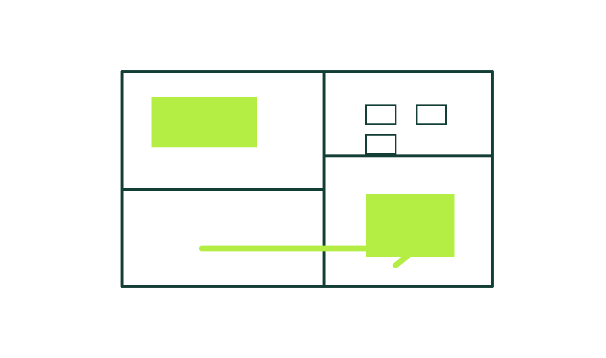
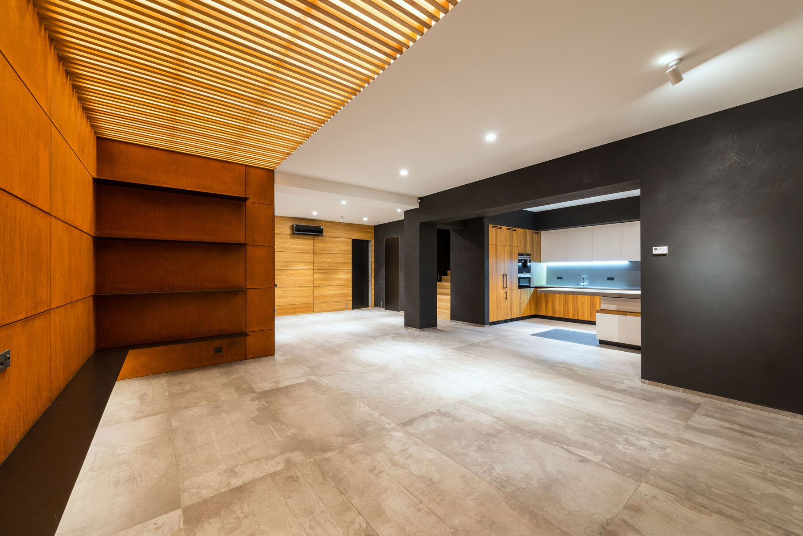
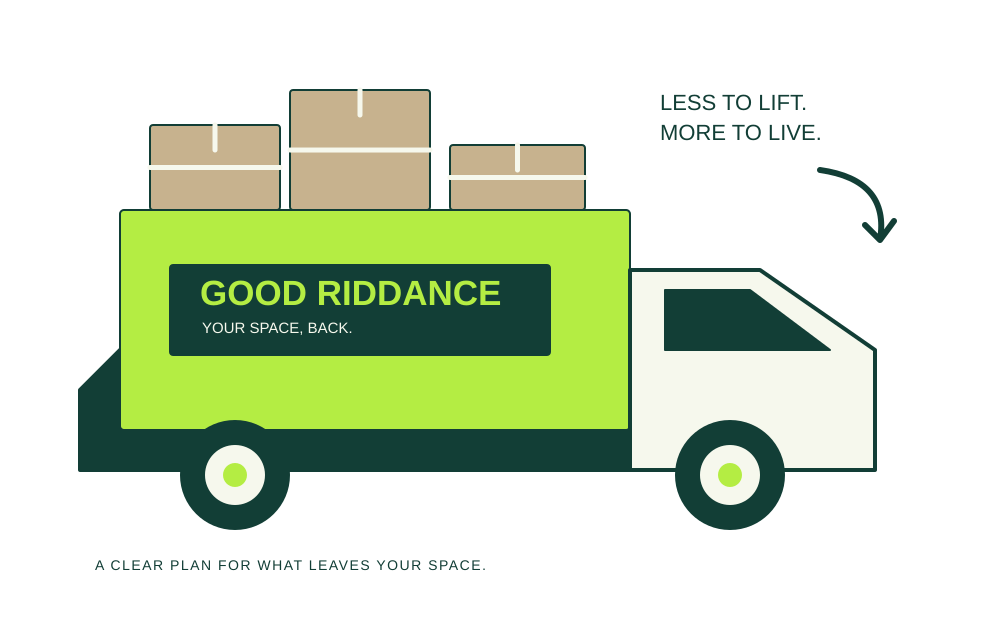
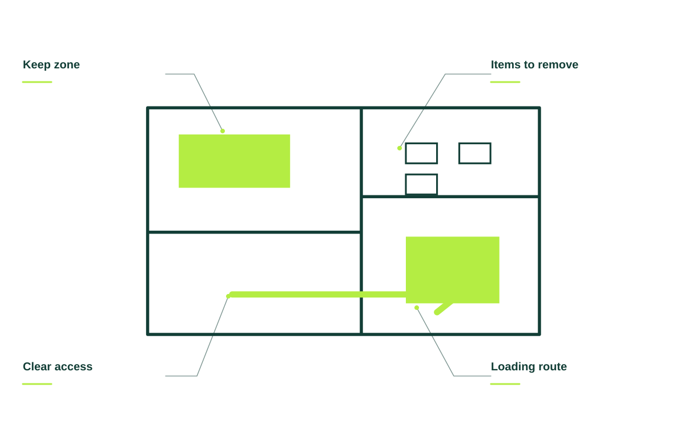
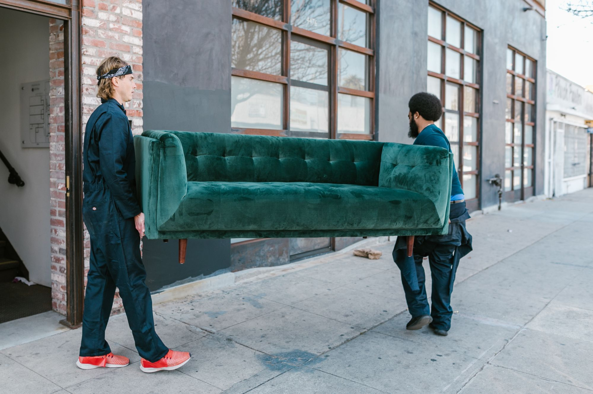
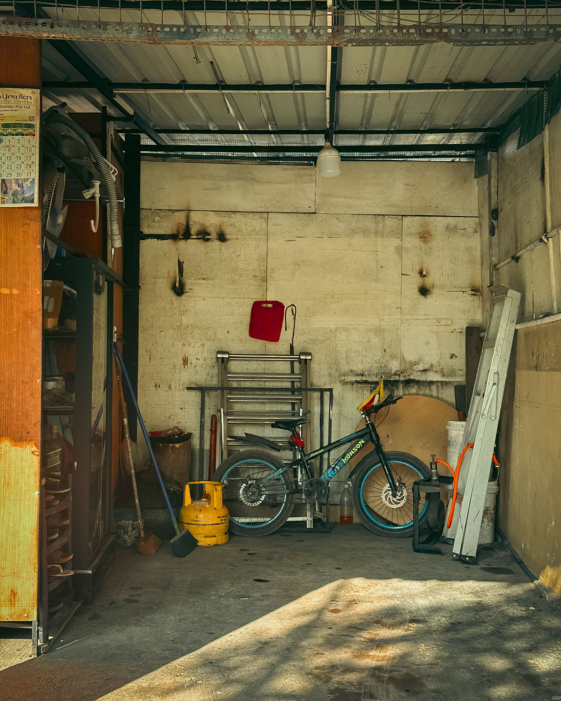
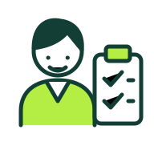
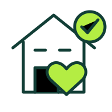
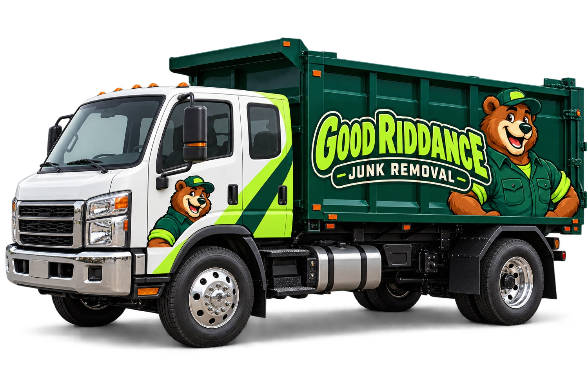

Furniture removal
Make space by clearing out furniture you no longer need.
Ask about a pickup ↗
Room to move. Room to breathe. Junk removal that starts with what needs to go.
Show us what needs to go ↗

Make space by clearing out furniture you no longer need.
Ask about a pickup ↗A practical plan for garages, storage areas, and spare rooms.
Ask about a pickup ↗Ask about removal for non-hazardous renovation materials.
Ask about a pickup ↗Clear out unwanted items from offices and workspaces.
Ask about a pickup ↗A useful removal plan starts with the items, the space, and the route out. Share the details so the proposal reflects the work instead of leaving questions for pickup day.

GOOD RIDDANCE / THE DETAILS MATTERTell us about the items, their size, and where they are in the property.
Photos and a short description help explain what stays, what goes, and the access involved.
Review stairs, parking, loading access, and any items that need to be discussed before a visit.

Send a few photos or tell us what you need removed. We’ll discuss access, the items, and a clear quote so you can decide before anything gets loaded.

Photos of the items are a great place to start.

Confirm access, accepted items, and the scope.

A planned pickup. The heavy lifting off your list.
When you get in touch, a little context goes a long way. These are the details that help us start a useful conversation about your junk removal project.
Tell us what you have in mind ↗Tell us about what should go so the conversation starts with your situation.
A few details about what should stay help us understand what you need.
Share stairs and loading access when you get in touch, including photos where useful.
Let us know about photos of the space so the proposed scope reflects your priorities.
Photos are a useful starting point. We’ll confirm the items, access, and final scope before work begins.
Some materials require specialist disposal. Tell us exactly what you have so we can confirm what is accepted.
Let us know where they are. We can discuss removal from the property and any stairs or access constraints.
